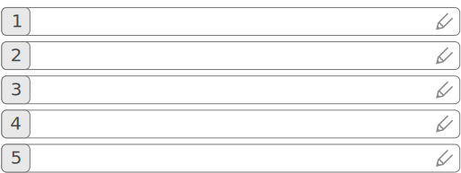

(preview1)
In den 11 Katas lernen die Teilnehmenden den Ablauf der Podcastproduktion. Ziel ist es am Ende des Lernpfades zwei Aufnahmen gemacht und veröffentlicht zu haben.
Kata 1: Wir starten mit Podcasts. Die initiale Kata bringt die Teilnehmenden zusammen, sie tauschen sich über ihre Erfahrungen mit Podcasts aus und über ihre Motivation eines eigenen Podcasts.
Kata 2: Plane deinen Podcast gut. Einen erfolgreichen Podcast machen viele Faktoren aus und müssen gut geplant sein. Die Planung in dieser Kata wird mit einem Podcast Canvas vorgenommen und begleitet die Teilnehmenden bis zum Schluss des Lernpfades.
Kata 3: Bereite den Auftritt des Podcasts vor. Zu einem guten Podcast gehört auch eine gute Präsenz, über die sich die Hörer*innen mit dem Podcast verbinden können. Es kann eine Webseite sein, ein Blog oder auch eine Gruppe auf einer der bekannten Plattformen wie LinkedIn und Facebook.
Kata 4: Mache die erste Aufnahme. Podcaster*innen benötigen viel Übung, um Technik zu beherrschen und guten Ton aufzunehmen. Daher fangen die Teilnehmenden möglichst früh damit an die ersten praktischen Erfahrungen zu sammeln. Für diese Kata reicht einfaches Equipment aus, wie zum Beispiel ein Smartphone.
Kata 5: Baue dein eigenes Podcaststudio. In dieser Kata geht es um die Tontechnik, Aufnahmeräume sowie Software für die Bearbeitung der Aufnahmen. Die Erfahrungen aus der Kata 4 dienen als Grundlage für das eigene Podcast-Setup.
Kata 6: Nehme die erste Episode auf. Die erste Episode des Podcasts wird nun geplant und aufgenommen. Je nach Planung des Podcasts kann ein Monolog oder ein Dialog als Format gewählt werden. Im Falle eines Dialogs schließt die Vorbereitung die Gesprächspartner*innen mit ein.
Kata 7: Bearbeite die erste Episode. Die Aufnahme muss nun mit passender Software nachbearbeitet werden („Postprocessing“). Je nach Format des Podcasts umfasst diese Aufgabe alles von einfachen Anpassungen bis hin zum umfangreichen Schnitt.
Kata 8: Veröffentliche die erste Episode. Die erste Episode wird nun nach der Aufnahme und Bearbeitung veröffentlicht. Zusätzlich zu dem Ton und der resultierenden Audiodatei benötigt die Episode weitere Informationen wie Titel, Beschreibung, Shownotes etc. Die Teilnehmenden holen sich das erste Feedback zu ihrem neuen Podcast ein.
Kata 9: Nehme auf, bearbeite und veröffentliche die zweite Episode. Mit den Erfahrungen aus den vorherigen Katas, der Veröffentlichung der ersten Episode und des Feedbacks wird nun die zweite Episode in einer einzigen Kata fertiggestellt: Aufnahme, Nachbearbeitung und Veröffentlichung. Auch da empfiehlt es sich Feedback einzuholen.
Kata 10: Bewerbe deinen Podcast. …
Kata 11: Tausche Erfahrungen aus. …
Für die initiale Kata kommen die Teilnehmenden zusammen und tauschen sich über ihre Erfahrungen mit Podcasts aus. Wie Menschen Podcasts hören ist sehr individuell und hängt stark von der Situation und persönlichen Umständen ab. Der Austausch über Podcatcher und Podcasts ist empfohlen, die erste Kata soll jedoch hauptsächlich zum Kennenlernen der Teilnehmenden genutzt werden.
Mögliche Fragen zum Einstieg in das Thema Podcasting:
Trage 5 Podcasts ein, die du kennst und gerne hörst. Teile die Liste mit dem Circle. Wenn du in sozialen Medien unterwegs bist (Twitter, LinkedIn, Xing oder im firmeninternen Netzwerk), teile diese Liste auch dort. Menschen freuen sich über Podcastempfehlungen.

Finde 5 Podcasts aus verschiedenen Kategorien, z.B. Comedy, Business, Education etc. Nutze dafür Verzeichnisse wie iTunes, Spotify oder das interne Podcastverzeichnis des Unternehmens. Höre in diese Podcasts rein und notiere die Merkmale der Kategorie. Diskutiere die Ergebnisse mit dem Circle.
In dieser Kata legen wir den Grundstein unseres Podcasts und machen uns Gedanken, die das Format bestimmen werden. Diese Planung begleitet uns auch in den nächsten Katas und hilft den Fokus zu behalten.
Da wir noch nicht alle Fragen beantworten können, reicht es im Moment aus, die Teile zu planen, die bereits klar sind. Der Rest kommt im Laufe der Zeit und vervollständigt das Bild.
Als Vorlage und Struktur des Podcasts wird der „Podcast Canvas“ genutzt, der auf dem Business Modell Canvas von Alexander Osterwalder basiert1. Diese Vorlage besteht aus mehreren Felder, die verschiedene Fragestellungen zum Podcast behandeln und digital oder in gedruckter Form bearbeitet werden. Die Einträge können jederzeit ergänzt, verschoben oder entfernt werden. Um auch in gedruckter Form die Flexibilität zu erhalten, empfiehlt es sich Klebezettel zu nutzen oder die Vorlage zu laminieren und mit einem Whiteboardmarker zu beschriften.
Der Podcasting Canvas besteht aus folgenden Feldern:
Warum der Podcast? Motivation, Zwecke und Vision des Podcasts. Es gibt heute viele Podcasts, warum sollten sich die Hörer*innen einen Podcast abonnieren? Welches Bedürfnis erfüllt der Podcast bzw. welches Problem löst er? Dient der Podcast dem Wissenstransfer oder eher der Unterhaltung? Warum sollte jemand Zeit und ggf. Geld in die Produktion des Podcasts investieren?
Zielgruppe. Die Zielgruppe des Podcasts zu kennen ist entscheidend für die Planung. Wer sind die typischen Hörer*innen, welche Kenntnisse haben sie, welche Erwartungen haben sie an den Podcast? Welche Erfahrungen haben die Hörer*innen mit Podcasts? Wann wird der Podcast gehört und wo? Welche Episodenlänge ist zumutbar?
Format. Das Format hat verschiedene Bedeutungen: Handelt es sich um ein Monolog, um ein Dialog mit einem oder mehreren Partner*innen? Wird ein Interview oder ein einfaches Gespräch geführt? Gibt es in dem Podcast Originaltöne, Einspieler oder wählt sich jemand per Telefon ein? Wird der Podcast mit dem gleichen Team am gleichen Ort aufgenommen oder finden mobile Interviews statt?
Distribution. Die Frage bezieht sich auf den tatsächlichen Weg, wie die Podcasts von Menschen bezogen werden. Wird eine Plattform genutzt (z.B. Spotify) oder handelt es sich um einen firmeninternen Podcast? Welche Kosten kommen auf den Podcast zu? Muss jemand den Podcast genehmigen oder freigeben?
Zeitplanung. Wie oft wird der Podcast aufgenommen und wie oft veröffentlicht? Wie viel Zeit steht für die Produktion zur Verfügung? Im Falle von Freigaben, wie lange dauert es, bis eine Episode freigegeben wird? Wie erreicht man Veröffentlichung in regelmäßigen Abständen?
Auftritt. Die visuelle Darstellung des Podcasts und der Ort wo der Podcast veröffentlicht wird. Zu dem Auftritt gehört mindestens ein Logo bzw. Coverbild, ein einfacher und prägnanter Name, eine Webseite oder Blog. Für den Austausch mit der Community empfiehlt sich eine Gruppe/Kanal in sozialen Medien.
Ressourcen und Stakeholder. Die organisatorischen Schnittstellen des Podcasts in die Außenwelt. Räumlichkeiten, Personen zur Unterstützung, Equipment, Tische, Stühle usw. Im Unternehmen auch z.B. die Kommunikations- sowie die Rechtsabteilung. Wer könnte den Podcast unterstützen und wer wäre dem Format gegenüber unter Umständen nicht wohlwollend eingestellt?
Technik. Die Aufnahmetechnik sowie Tools für die Nachbearbeitung. Welches Mikrofon soll eingesetzt werden? Welche Aufnahmegeräte und Verstärker? Brauchen Teilnehmer Kopfhörer oder nicht? Welche Software wird für die Aufnahme und Nachbearbeitung benötigt?
Trage in dem Podcast Canvas ein warum du den Podcast starten möchtest. Was wäre dein Alleinstellungsmerkmal? Du investierst Zeit und ggf. Geld in den Podcast, eine Marktanalyse gehört zum Erfolg dazu. Suche nach ähnlichen Podcasts in diversen Verzeichnissen (iTunes, Spotify) und schreibe auf, was dein Podcast bieten soll, was die anderen bisher nicht tun.
Überlege dir, für welche Zielgruppe du den Podcast produzieren möchtest. Trage die Ergebnisse ins den Canvas ein. Folgende Fragen könnten als Stütze dienen:
Mach dir jetzt schon Gedanken, wo die Aufnahme stattfinden soll und welche Hardware und Software du einsetzen möchtest. Denn diese externen Abhängigkeiten können vor allem im Unternehmenskontext lange Zeit in Anspruch nehmen. Trage die ersten Ideen in den Canvas ein und auch wer dir mit diesen Fragen helfen kann. Zögere nicht die Person(en) frühzeitig zu kontaktieren.
Zu einem Podcast gehört auch eine visuelle Darstellung: Ein Coverbild mit Titel, ggf. Slogan und weiteren Details, die man mit diesem Bild vermitteln möchte. Und dann je nach Plattform, über die der Podcast angeboten wird, auch eine ausführlichere Darstellung wie eine Webseite (Landing Page, Blog) und der Auftritt auf Social Media (Facebook, Instagram, Twitter oder das ESN).
Coverbild. Ein Coverbild ist das Aushängeschild des Podcasts, es ist immer sichtbar: Auf einer Webseite, bei Spotify, in dem Podcatcher und sogar im Multimediasystem des Autos. Daher sollte dieses Bild einfach, prägnant und ansprechend aussehen.
Das Coverbild muss die Idee oder den Charakter des Podcasts transportieren. Eine schnell erkennbare Darstellung, dank derer der Podcast unter vielen anderen Covern erkannt wird.
Weitere hilfreiche Tipps und Anleitungen findest du im Internet. Hier ist eine kleine Auswahl, die dir den Einstieg erleichtert:
Webauftritt. Der Podcast wird in den meisten Fällen über die bekannten Verzeichnisse entdeckt und abonniert. Einige dieser Verzeichnisse bieten die Möglichkeit die Dokumente wie Audiodateien und Grafiken direkt beim Dienst abzulegen (z.B. Spotify). Andere wiederum sind auf den Webspace des Podcasters/der Podcasterin angewiesen (z.B. iTunes). In diesem Falle muss der Podcast auch einen Webauftritt haben.
Der Webauftritt kann unterstützende Informationen anbieten, wie Downloads von zusätzlichem Material. Eine Webseite bietet außerdem die Möglichkeit mit den Hörer*innen zu kommunizieren und Feedback zu erhalten.
Es kann sich bei dem Webauftritt auch um eine Seite im Intranet oder Blog im Enterprise Social Network handeln, wenn im Unternehmen vorhanden.
Social Media. Ein weiterer Kanal, um mit dem Publikum in Kontakt zu treten, sind Social Media Plattformen. Es bieten sich bekannte öffentliche Plattformen wie Twitter und Facebook oder auch firmeninterne Plattformen an. Der Vorteil dieser Social Media Plattformen gegenüber einem Webauftritt ist die hohe Reichweite und die direktere Kommunikation: Man kann schneller eine Beziehung zum Publikum aufbauen. Man sollte jedoch den zeitlichen Aufwand nicht unterschätzen, der in die Betreuung von dem Social Profil investiert wird: Beiträge schreiben, auf Reaktionen und Fragen der Menschen zeitnah und persönlich reagieren.
Suche den geeigneten Ort für den Auftritt deines Podcasts. Stelle eine Liste zusammen und bewerte welche Vor- und Nachteile der jeweilige Ort bietet. Wenn du nicht weiterkommst, stelle eine Liste der Personen zusammen, die dich unterstützen könnten. Kontaktiere diese Personen, um den geeigneten Ort für den Podcast zu finden.
Lege die Metadaten deines Podcasts fest. Diese kannst du, wenn bereits eingetragen, aus dem Podcasting Canvas übernehmen. Zu den Metadaten gehören folgende Informationen:
Nutze die oben aufgeführten Links, um dich in die Thematik des Coverdesigns einzuarbeiten. Entwerfe die erste Version des Coverbilds und hole Feedback ein. Untersuche wie der Cover in unterschiedlichen Größen wirkt und welche Informationen er dem Nutzer transportiert. Arbeite das Feedback ein und diskutiere das entstandene Coverbild mit dem Circle.
https://en.wikipedia.org/wiki/Business_Model_Canvas↩︎